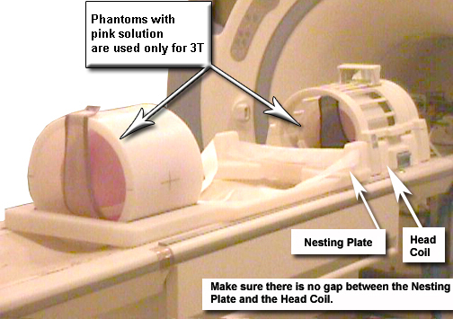
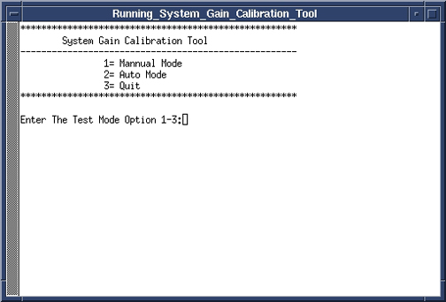

Operating Documentation
Direction 5133315-3, Rev# 14
Signa EXCITE HD 1.5T Service Methods
Module Version 7.0, Version Date 8/28/09
Operating Documentation |
| Required Persons | Preliminary Reqs | Procedure | Finalization |
|---|---|---|---|
| 1 | 10 mins | 20 mins | 10 mins |
| Item | Qty | Effectivity | Part# | Manufacturer | |
|---|---|---|---|---|---|
| Body TLT Sphere | 1 | - | 46-265635G6 | - | |
| SPT Body Loader | 1 | - | 2135652-2 | - | |
| ||||
| POISON HAZARD! | ||||
| 1.5T, 1.0T, and 0.7T Phantoms CONTAIN NICKEL, A SUSPECTED CARCINOGEN. | ||||
| DO NOT INGEST. DISPOSE OF AS A HAZARDOUS WASTE ACCORDING TO STATE AND FEDERAL REGULATIONS. |
| ||||
| POISON HAZARD! | ||||
| 3.0T Phantoms Dimethyl Silicon Fluid. | ||||
| DO NOT INGEST. If a lead or spill occurs, wipe up or absorb in inert material and place in a container for disposal. Incineration or landfill is the recommend disposal method. |
| Condition | Reference | Effectivity |
|---|---|---|
Signa software fully operational. | - | - |
Gradient calibration is completed. | - | - |
No image artifacts. | - | - |
System should be set to English language. | - | - |
For systems with the new split top head coil position SNR Sphere in the head loader as shown in Illustration 1. Fasten the strap to the top of the head load to secure the SNR Sphere in side the loader. Positions the head loader on top of the Head TLT loader holder in within the head coil so the loader is centered and the loader axial mark is at the center of the head coil window. See Illustration 2.
Illustration 1: POSITION SNR SPHERE IN HEAD LOADER

Illustration 2: LANDMARKING HEAD SNR SPHERE

For systems with the quad head coil position DQA phantom in the head coil. Turn on the alignment lights and align so the center of the DQA phantom matches the axial beam. Then place the head TLT sphere in the head loader and fasten the strap to the top of the head loader to secure the Sphere. Remove the DQA phantom and replace with the head loader/sphere centering it using the axial alignment light.
Place the SPT Body Loader and Body Sphere after the head coil. See Illustration 3.
Illustration 3: PHANTOM SETUP

Landmark on the head coil. As the calibration runs, the table will move to the body coil scan by itself.
Go to the Service Desktop and start the Service Browser if it is not already running. In the Calibration Tab, start System Gain Calibration. See Illustration 4.
Illustration 4: STARTING SYSTEM GAIN CALIBRATION

In the System Gain Calibration Tool select option 2<Enter>. See Illustration 5.
Illustration 5: SYSTEM GAIN CALIBRATION TOOL

In the next window, select option 2<Enter> for body only calibration.
Illustration 6: Selecting Body Mode Calibration

The system will begin scanning and one of two messages will display:
One possible message will say that the calibration is done and no adjustments is required.
The next possible message will ask if you want to save the new recon scale factor. Type y<Enter> to save the new calibration file. See Illustration 7.
Illustration 7: CALIBRATION OUTPUT

When done, type 4<Enter> to exit the tool.
Continue to System Gain Head Calibration if required.
Reboot the system.
Remove all phantoms from the system and do a check scan to insure proper operation.